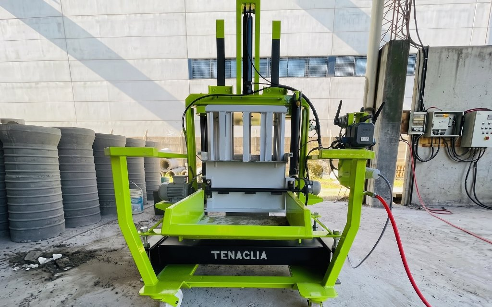
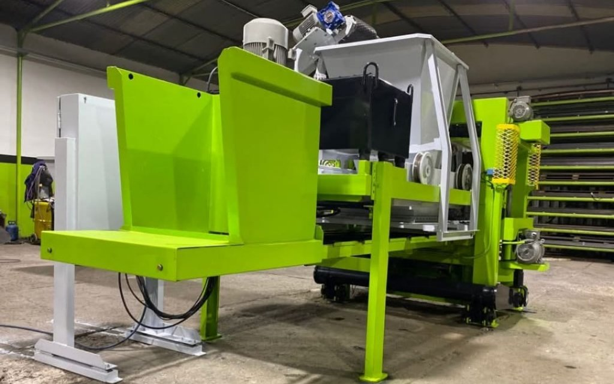
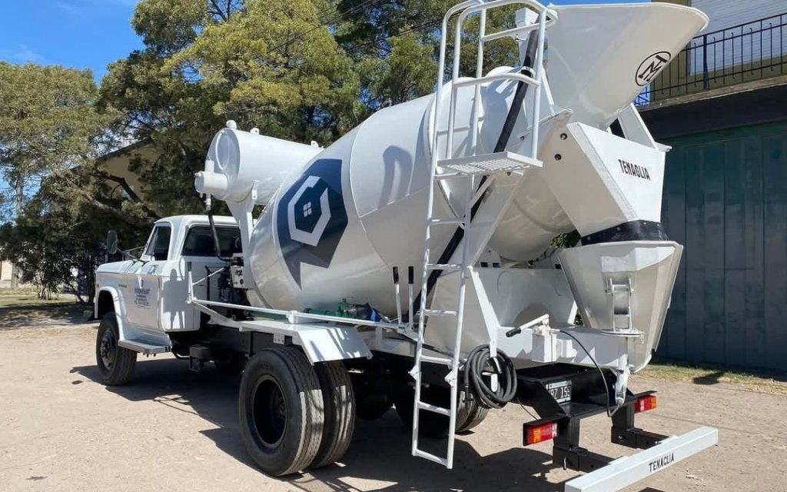
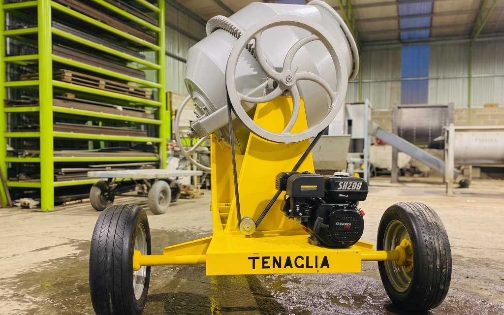
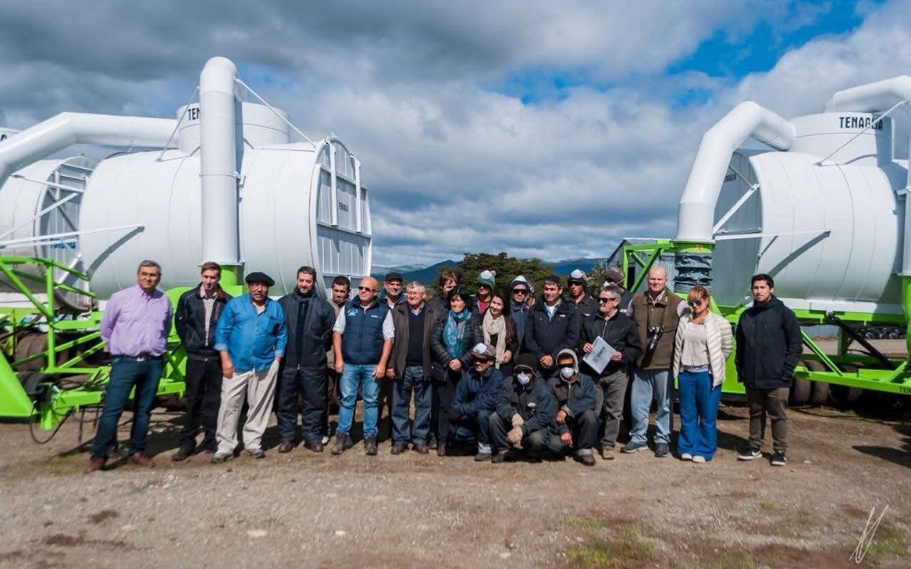

Trabajos realizados

Adoquinera Hidráulica
Fase final de ensamble de adoquinera hidráulica Serie 8.

Cámaras de inspección
Máquina para hacer cámaras de inspección.

Adoquinera Hidráulica
Adoquinera hidráulica finalizada y lista para entregar

Ingeniería de Procesos
Desgarradora de bolsas para clasificación de residuos urbanos

Estructuras Robustas
Hormigonero de 4 metros cúbicos.

Mezcladora de tambor vasculante
Mezcladora de tambor vasculante de 360 litros.

Línea Agrícola
Cosechadora de turba por vacío

Presentación y puesta en marcha
Presentación y entrega de cosechadora de turba